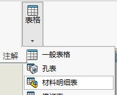
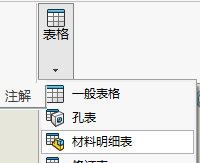

自动零件序号排序
新建
要顺次排列零件序号，首先插入材料明细表。
在工程图视图中，执行下列操作之一：
- 自动零件序号
（注解工具栏），或插入 > 注解 > 自动零件序号
- 零件序号
（“注解”工具栏），或 插入 > 注解 > 零件序号
- 成组的零件序号
（注解工具栏)或 插入 > 注解 > 成组的零件序号
在 PropertyManager 中的 项目号 下，选择 顺次排序 。 材料明细表将按照重新排列的顺序更新。
要顺次排列零件序号，首先插入材料明细表。
在工程图视图中，执行下列操作之一：
在 PropertyManager 中的 项目号 下，选择 顺次排序 。 材料明细表将按照重新排列的顺序更新。